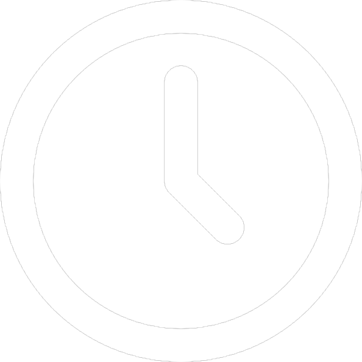
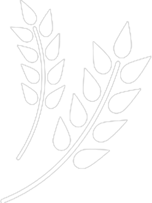

Als je jezelf pusht iedere keer dat je naar de fitness gaat zal je zien dat je heel snel beter zal voelen en meer resultaten zal zien op een korte tijd. Dit kan ook een motivatie zijn om meer naar de fitness te gaan. Iedereen wil het mooie lichaam maar enkel een paar mensen werken er ook echt voor hierdoor kan je jezelf nog unieker maken. Persoonlijk vindt ik het ook leuker om meer kracht te hebben, dit helpt bij het dagdagelijks leven zoals de bootschappen uit de auto halen, je boekentas mee nemen, zware objecten verplaatsen zonder dat je hulp hoeft te vragen.
Als je een routine voor jezelf maakt zal het makkelijker worden om naar de fitness te gaan. Het menselijk lichaam houd van routines, zoals het opstaan en gaan slapen. Je lichaam zal er een gewoonte van maken dat je op die momenten naar de fitness gaat en zal het dus ook makkelijker zijn om ook echt naar de fitness te gaan. Ik ga op deze dagen:
| Maandag | Dinsdag | Woensdag | Donderdag | Vrijdag | Zaterdag | Zondag | |
|---|---|---|---|---|---|---|---|
| Karate | 18:30 | 18:30 | 10:00 | ||||
| fitness | 17:00 | 13:00 | 10:00 |
In de tussen tijden dat ik geen sport doe probeer ik ook veel op mijn eten te letten want je voeding is eigenlijk 70% van al je werk in de fitness. Je hebt veel proteine nodig om je lichaam te repareren hierdoor krijg je grotere spieren. Je hebt ook heel veel energie nodig dit kan je ook gemakkelijk uit je voeding halen. Daardoor dat ik heel veel op mijn voeding probeer te letten zodat ik nog sneller vooruitgang kan maken
